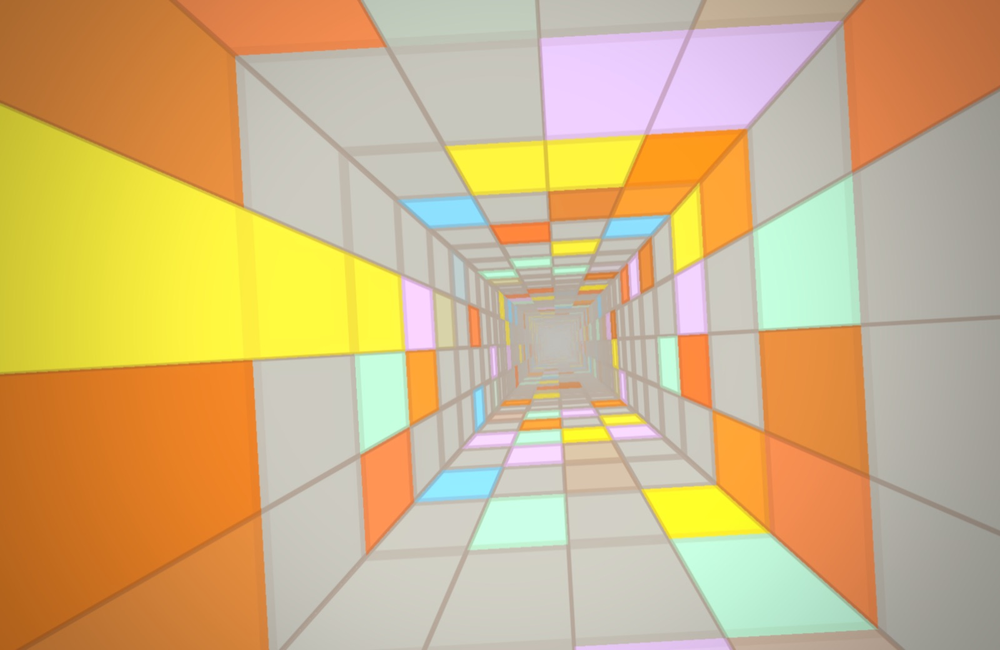

LockLyrics
Synced lyrics for whatever you play on your Mac, word by word, on the lock screen, the desktop or full screen, over 3D scenes that move with the music.
Download for MacFree · macOS 14 or later · Apple Silicon and Intel

What it does
- Plays along with Apple Music, Spotify, and YouTube or Spotify in a browser: no setup per song.
- Lyrics on the lock screen, as a live desktop wallpaper, or in a full-screen player.
- Ten 3D scenes and 23 lyric styles that react to the beat, the bass and every sung word.
- A frame light around the screen in time with the music.
- When a song starts, a small card offers the lyrics.
Install
- Open LockLyrics.dmg and drag LockLyrics into Applications.
- The first time, right-click LockLyrics in Applications and choose Open (it is not notarized by Apple yet), or allow it in System Settings → Privacy & Security → Open Anyway.
- The welcome page asks for what it needs, one button each: your music players, the sound your Mac plays (for the beat), and Open at login.
Privacy
The playing song's title and artist are sent to lyric and artwork services (LRCLIB, NetEase, the iTunes Search API, TheAudioDB, Deezer) to find its lyrics and pictures. The sound is analysed on your Mac for the beat and never recorded or sent. No accounts, no analytics, no tracking.